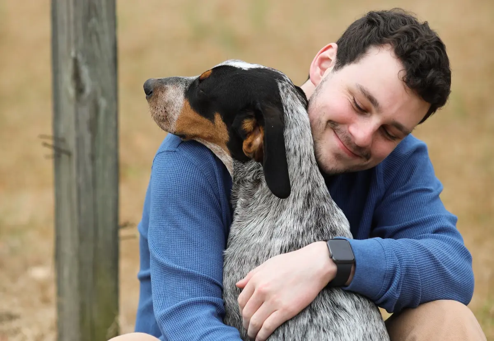

|  |
CASO 8
Nombre y Apellidos: Diego Villeda Vasquez
Género: Hombre
Edad: 42
Municipio: Coacalco
Fecha del acontecimiento: 27/Dic/2020
Diego cada tarde salía a pasear en compañía de su
mejor amigo Jr. Diego. Una de esas veces Jr. salió
corriendo porque un sonido muy fuerte lo asustó.
Esto provocó que se atorara en un hueco bastante estrecho,
Diego intentó auxiliarlo pero fue en vano.
Se comunicó con el equipo de bomberos y de inmedieto
que esta en nuestra página que y estos fueron.
Al cabo de unso minutos Jr. Diego estaba sano y salvo.
|